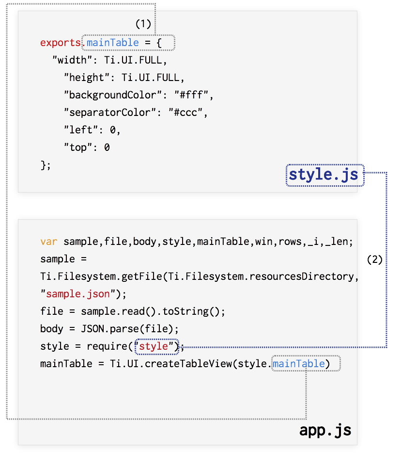

TableViewの使い方について学ぶのサンプルデータを表示させるのサンプルコードをベースにCommonJSスタイルの書き方について解説していきます。
Resources直下に、style.jsというファイルを新規に作成します。作成後は以下の様なフォルダ構成になるかと思います。
├── CHANGELOG.txt
├── LICENSE
├── LICENSE.txt
├── README
├── Resources
│ ├── KS_nav_ui.png
│ ├── KS_nav_views.png
│ ├── app.js
│ ├── iphone
│ └── style.js
├── build
│ └── iphone
├── manifest
└── tiapp.xml
style.js を以下のように記述することで、UI要素の幅、高さ、色などの値の設定箇けをapp.jsから切り離すことが出来ます。
exports.mainTable = {
"width": Ti.UI.FULL,
"height": Ti.UI.FULL,
"backgroundColor": "#fff",
"separatorColor": "#ccc",
"left": 0,
"top": 0
};
exports.row = {
"width": Ti.UI.FULL,
"height":60,
"borderWidth": 0,
"className":"entry"
};
exports.textLabel = {
"width":250,
"height":50,
"top":5,
"left":60,
"color":"#222",
"font":{
"fontSize":16,
"fontWeight":"bold"
}
};
UI要素を生成する部分はstyle.jsにて行うようにしたことでapp.jsの方を編集する必要が出てきます。
具体的には
という流れになります。
編集した結果以下の様なコードになります。
var sample,file,body,style,mainTable,win,rows,_i,_len;
sample = Ti.Filesystem.getFile(Ti.Filesystem.resourcesDirectory, "sample.json");
file = sample.read().toString();
body = JSON.parse(file);
style = require("style");
mainTable = Ti.UI.createTableView(style.mainTable);
win = Ti.UI.createWindow({
title:'QiitaViewer'
});
rows = [];
for (_i = 0, _len = body.length; _i < _len; _i++) {
row = Ti.UI.createTableViewRow(style.row);
textLabel = Ti.UI.createLabel(style.textLabel);
textLabel.text = body[_i].title;
row.add(textLabel);
rows.push(row);
}
mainTable.setData(rows);
win.add(mainTable);
win.open();
style.jsとapp.jsの対応関係を絵にまとめつつソースコードの解説をします。

なおstyle.jsでは、
という形になります。
このように設定情報だけを別のファイルにするだけでも比較的ソースコードの見通しが良くなりますが、次の項でもう少し踏み込んだ形でCommonJSスタイルの書き方を紹介します。